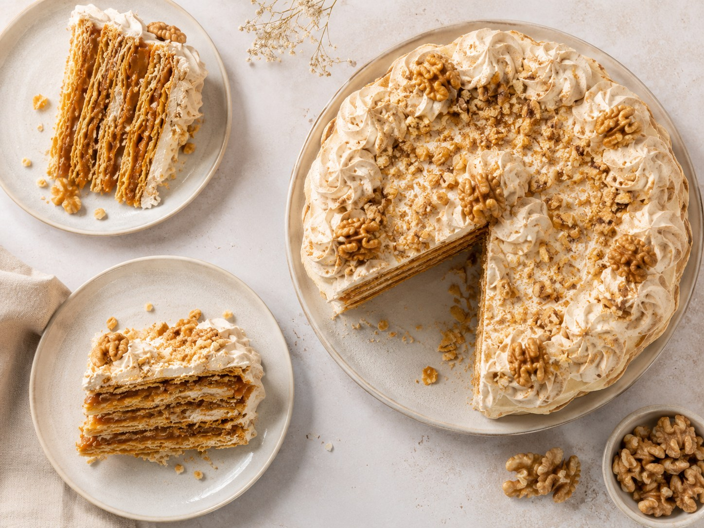
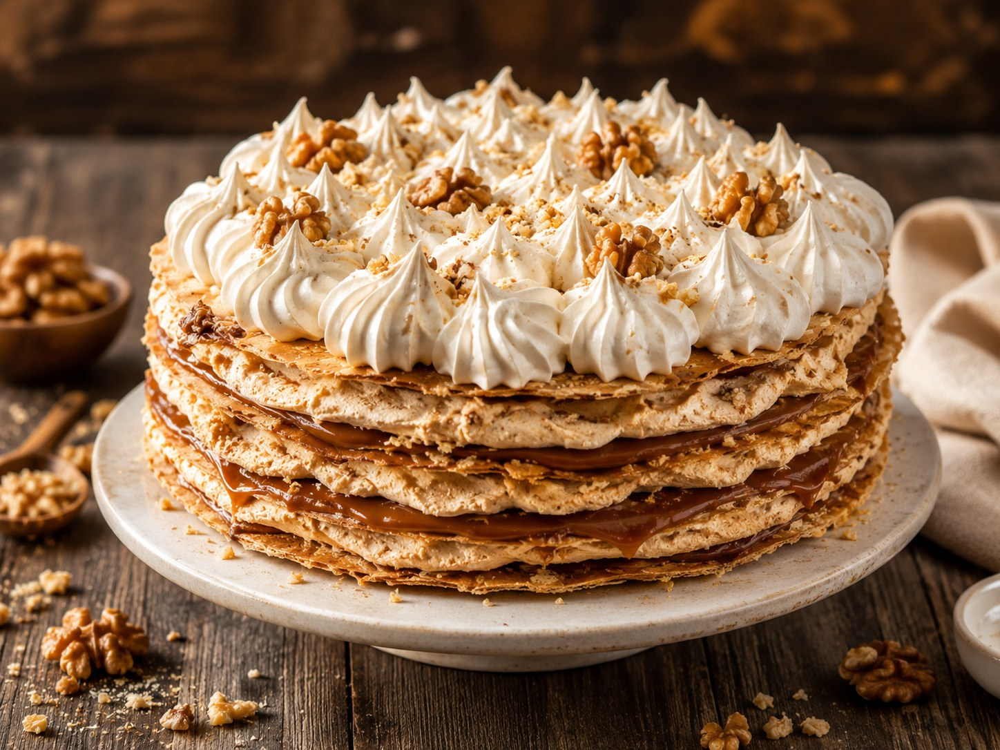
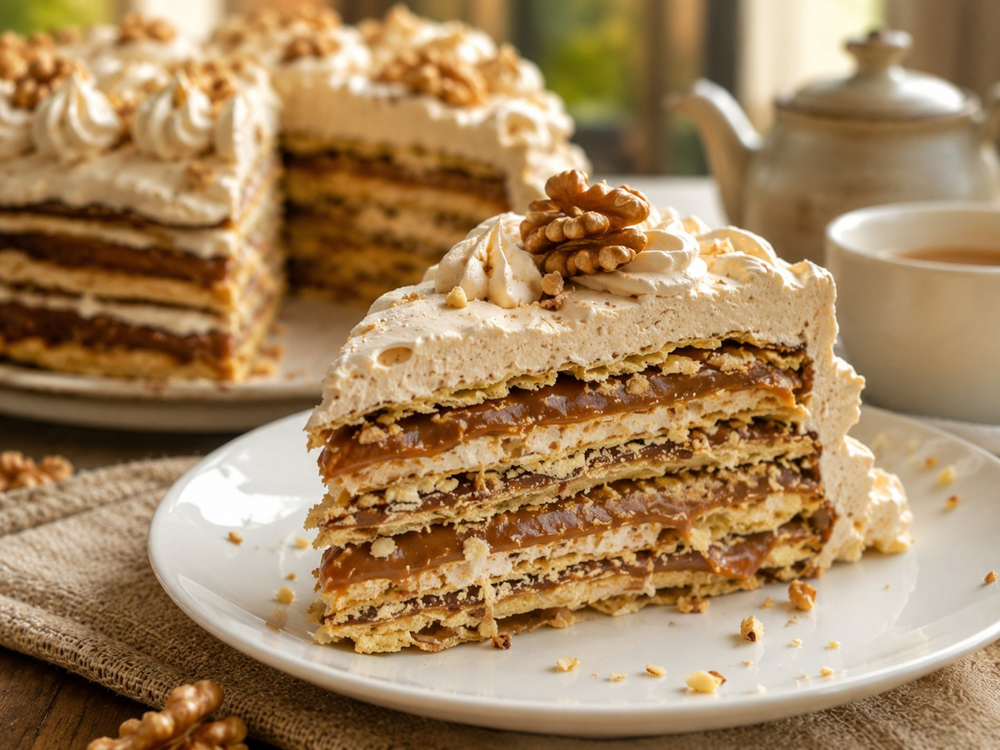

Turrón salteño
Un postre tradicional de Salta hecho con tapas finas de masa, dulce de leche repostero, merengue de miel de caña y nueces. Su armado por capas resume muy bien la identidad de Misky Stack: dulzura regional, técnica artesanal y una presentación imponente.

Por qué representa a Misky Stack
El turrón salteño es una construcción de capas: masa crocante, dulce de leche, merengue de miel de caña y nueces. Por eso funciona como símbolo de la marca: une la idea de stack con una receta del NOA profundamente artesanal.
Masa
- 1 docena de yemas
- 1/2 kg de harina común 000
- 2 cucharadas de polvo para hornear
- 1 cucharada de grasa pella o manteca derretida
- 1 taza tamaño café de leche fría
- 1/2 taza de anís opcional
Relleno
- 1 docena de claras
- 500 cc de miel de caña
- 4 cucharadas de azúcar
- 1/4 kg de nueces
- 1/2 taza de agua
Armado
- Dulce de leche repostero, cantidad necesaria
- Nueces partidas para decorar
- Tapas de masa ya cocidas
- Merengue de miel de caña
Paso a paso de la masa
- Tamizar la harina con el polvo para hornear al menos tres veces. Esto airea la harina y ayuda a lograr una masa liviana.
- Formar una corona sobre la mesada y colocar en el centro las yemas, la leche fría, el anís si se usa y la grasa pella o manteca derretida.
- Unir todo con las manos desde el centro hacia los bordes.
- Amasar hasta que aparezcan pequeñas bombitas o burbujas finas en la masa.
- Dividir en ocho partes iguales para preparar dos turrones grandes y dejar reposar 10 minutos.
- Estirar cada parte siempre de una sola cara. No dar vuelta la masa mientras se estira.
- Dejar reposar otros 10 minutos, dar vuelta, perforar con tenedor y hornear en horno muy caliente durante 1 minuto.
- Las tapas deben quedar blancas: solo cocidas, sin dorarse ni quemarse.
Paso a paso del relleno
- Colocar en una cacerola la miel de caña, el azúcar y el agua.
- Llevar a fuego medio y revolver hasta que se disuelva.
- Cocinar hasta alcanzar punto bolita: al echar una gota en agua fría, debe formar una bolita blanda.
- Batir las claras a punto nieve bien firme.
- Sin dejar de batir, agregar de a poco el almíbar caliente de miel de caña.
- Continuar batiendo hasta lograr una mezcla marrón clara, espesa y brillante. Ese es el dulce de turrón.
Armado del turrón
- Colocar una tapa de masa con la cara perforada hacia arriba.
- Untar una capa fina de dulce de leche repostero.
- Agregar una capa generosa del merengue de miel de caña y espolvorear nueces picadas.
- Tapar con otra capa de masa y repetir: dulce de leche, merengue y nueces.
- Continuar hasta completar cuatro capas de masa por turrón.
- Cubrir los contornos con más dulce de leche.
- Decorar la superficie con nueces partidas enteras.
- Dejar reposar unas horas antes de cortar.
Galería



Otros sabores del NOA
La mesa dulce regional también incluye colaciones, gaznates, empanadillas de cayote o membrillo, nueces confitadas, alfajor de miel de caña, pasta frola y pastel de novia.